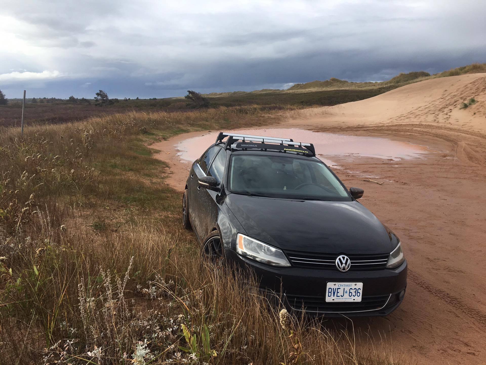

1999.5 Volkswagen Golf GL TDI
This car was the most important car I could have purchased. It was my first official car. I bought it June 1st 2014 for $3800. Funny story is I couldn't even drive manual properly at the time and had to have a close friend of mine drive it home for me. I was able to drive it through parts of Caledon by the next weekend. My dad drove it during the week while I drove his 2013 Honda Civic Touring (Automatic). I'm pretty sure he enjoyed his week with the car. He mentioned how many people stopped him to talk to him about his "cool ride".
Modifications this car had :
- Upgraded Injectors
- EGR Delete
- Stage 1.5 Tune
- Mufflerectomy
- Ventectomy
- Koni Coils
- Straight-piped Exhaust
- 5000K HID Low Beams
- RS6 Reps Wrapped in BF Goodrich
2015 Honda Civic Si Coupe
Buying this car was an interesting process. I was so keen on walking into another Volkswagen Dealership and pick up a base model 1.8 TSI Golf in Tornado Red to match my 1999.5 Volkswagen Golf. However, my dad was super set on convincing me to buy a basemodel Honda Civic :/. Now what none of us realized is that my uncle worked at the same dealership we went to check out the Civics at. By the end of the day he had me hooked on picking up the only Ralleye Red Si Coupe they had in their inventory.
Modifications this car had :
- 15% Tint all the way around
- 5000K HID Low Beams
- 3000K HID Fog Lights
- Plastidipped Emblems
- Honda OEM Mats and Trunk Liner
2012 Volkswagen Jetta TDI
After my Golf TDI this was probably my favourite ride. I purchased this car May 2016. My friend was looking to sell his car in order to put a downpayment on his Subaru STI so I got a great deal of this car.
Modifications this car had :
- 30% Tint all the way around
- 5000K HID Low Beams
- 3000K HID Fog Lights
- Volkswagen Roof Racks and Thule Fairing
- Stage 2 Malone Tune
- Straight-Piped Exhaust
- Lowered on ST Coilovers
- BBS Rep Rims wrapped in Newton NT5000